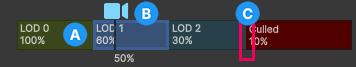

The LOD Group component lets you manage level of detailThe Level Of Detail (LOD) technique is an optimization that reduces the number of triangles that Unity has to render for a GameObject when its distance from the Camera increases. More info
See in Glossary (LOD) for GameObjectsThe fundamental object in Unity scenes, which can represent characters, props, scenery, cameras, waypoints, and more. A GameObject’s functionality is defined by the Components attached to it. More info
See in Glossary.
| Property | Description |
|---|---|
| Fade Mode | Selects the transition effect type to apply between LOD levels. The options are the following:
|
| Animate Cross-fading | Sets a single transition time for all LODs, which occurs after the LOD threshold is reached. This property is available only if you set Fade Mode to Cross Fade or Speed Tree. For more information, refer to Make LOD transitions smooth in LOD Group. |
| LOD Group selection bar | Displays the LOD levels as colored boxes. For more information, refer to the LOD Group selection bar section. |
| Recalculate Bounds | Recalculates the bounding volumeA closed shape representing the edges and faces of a collider or trigger. See in Glossary that encompasses all LODs. Use this after you modify a LOD, for example if you adjust the Scale of the Transform component of a LOD renderer. |
| Recalculate LightmapA pre-rendered texture that contains the effects of light sources on static objects in the scene. Lightmaps are overlaid on top of scene geometry to create the effect of lighting. More info See in Glossary Scale |
Updates the Scale in Lightmap property on all MeshThe main graphics primitive of Unity. Meshes make up a large part of your 3D worlds. Unity supports triangulated or Quadrangulated polygon meshes. Nurbs, Nurms, Subdiv surfaces must be converted to polygons. More info See in Glossary Renderers in the LOD Group, based on any changes to the LOD level boundaries. |
| Object Size | Sets the size of the object in meters for LOD Group calculations. For example, if you change Object Size from 1 to 0.6, an object that has a screen height of 100% is now considered to have a screen height of 60%. As a result, the transitions to smaller screen height percentages and less detailed LOD levels occur closer to the cameraA component which creates an image of a particular viewpoint in your scene. The output is either drawn to the screen or captured as a texture. More info See in Glossary. |
| Reset Object Size | Resets Object Size to its default of 1, but recalculates LOD level boundaries so the transition distances in meters stay the same. |
The LOD Group selection bar displays the LOD levels as colored boxes.

LOD level box. Displays a percentage of the screen height. The LOD level is active between this height and the height in the next LOD level box. For example, 50% means the LOD level becomes active when the object fills half the height of the camera view.
When you drag the camera icon, the Scene view displays the LOD level the camera renders at that ratio. The rectangle around the object is the bounding box of the object.
Note: Unity only displays the LOD label in the Scene viewAn interactive view into the world you are creating. You use the Scene View to select and position scenery, characters, cameras, lights, and all other types of Game Object. More info
See in Glossary when a single GameObject is selected.
LOD level boundary. To change when the LOD level becomes active, select and drag the boundary.
Note: To preview LODs without the rest of the Scene view turning gray, from the main menu go to Preferences > Scene View and disable Enable Filtering While Editing LOD Groups.
To display the Renderers panel, select a LOD level box in the LOD Group selection bar.
| Property | Description |
|---|---|
| Transition (% Screen Size) | Sets the height of the object when the LOD level transitions to the next LOD level, as a percentage of the screen height. To the right of this property, Unity displays the camera distance at which the LOD level transitions, in meters. |
| Set to Camera | Sets the Transition (% Screen Size) value to the height of the object in the current camera view. |
| Fade Transition Width | Sets the transition width between this LOD level and the next. A smaller value delays the beginning of the transition and makes the transition shorter. For example, if you set the Fade Transition Width of LOD0 to 0.4, the transition to LOD1 occurs over 40% of the LOD0 range. This property is only available if you set Fade Mode to Cross Fade and disable Animate Cross-fading. For more information, refer to Make LOD transitions smooth in LOD Group. |
| Renderers | The Renderers to render at this LOD level. To add Renderers, select the Add (+) button, then select the Renderer picker (⊙) or drag and drop to add the GameObject that contains the Renderers. For more information, refer to Import or create LOD levels for a LOD Group. |
LODGroup